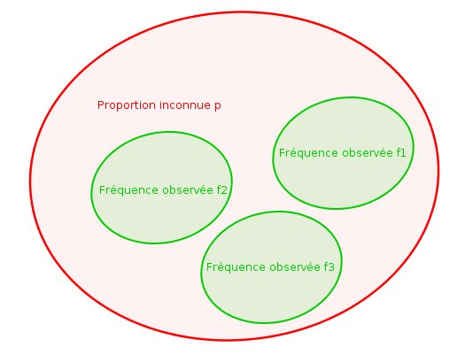

Estimation par Échantillonnage & Inférence Statistique

🔍 AgrandirCadre du projet & Objectifs
Mise en pratique des fondamentaux de la statistique inférentielle : intervalles de confiance, tests d'hypothèse, fluctuation d'échantillonnage. Passer d'une description d'échantillon à une inférence sur la population.
Étapes de réalisation
Fluctuation d'échantillonnage
Simulations pour observer comment la moyenne d'un échantillon fluctue selon sa taille. Construction des intervalles de confiance à 95% et 99%.
Tests d'hypothèse
Application de tests statistiques (Student, Chi²) pour prendre des décisions sur des affirmations à partir de données réelles.
Interprétation
Lecture des p-valeurs et conclusions statistiques contextualisées avec le bon vocabulaire inférentiel.
Ce que j'en retire
La p-valeur ne dit pas tout
Un résultat statistiquement significatif n'est pas forcément significatif dans le monde réel. La taille de l'effet et le contexte métier comptent autant que la p-valeur.
💡 Ce que j'ai retenu
Bien formuler les hypothèses avant les tests est aussi important que les calculs qui suivent. La statistique inférentielle est un outil de décision, pas de certitude.
Positionnement par rapport aux ACs
| Apprentissage Critique | Statut | Commentaires |
|---|---|---|
| AC12.05 Comprendre l'intérêt de l'utilisation d'un modèle probabiliste |
A | Construction correcte des intervalles de confiance et interprétation des lois normales et de Student selon le contexte. |
| AC12.06 Appréhender la notion de fluctuation d'échantillonnage à l'aide de simulations probabilistes |
P | Simulations réalisées et observées, mais la formalisation mathématique des résultats aurait pu être plus rigoureuse. |